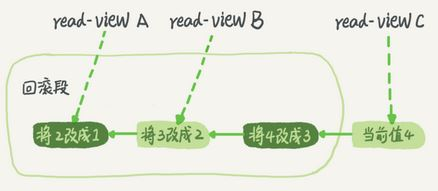

MyISAM vs. InnoDB #
| 描述 | MyISAM | InnoDB |
|---|---|---|
| 行锁(并发高，会死锁) | × | √ (默认支持) Record lock: 锁记录 Gap lock: 锁范围，不锁记录 Next-key lock： 锁范围+锁记录 |
| 表锁(并发低，不会死锁) | √ | √ |
| 事务和崩溃恢复 | × | √ |
| 外键 | × | √ |
| MVCC | × | √ 在READ COMMITTED 和 REPEATABLE READ时有效 |
事务隔离级别 [4] #
| 隔离级别(从高到低) | 脏读 | 不可重复读 （重点是修改） |
幻影读 （重点是新增或者删除） |
|---|---|---|---|
| SERIALIZABLE | × | × | × |
| REPEATABLE-READ （InnoDB默认隔离级别） |
× | × | √ |
| READ-COMMITTED | × | √ | √ |
| READ-UNCOMMITTED | √ | √ | √ |
innodb对于行的查询使用next-key lock Next-locking keying、Gap锁为了解决Phantom Problem幻读问题 当查询的索引含有唯一属性时(单条记录)，将next-key lock降级为record key
新的隔离级别 #
- SI[Snapshot Isolation] Oracle 可串行化, PG和MySQL称为RR
- SSI[Serializable Snapshot Isolation] PostgreSQL 和 CockroachDB 已经支持 SSI
RC和RR隔离级别 [chat] #
下面是一个表格，归纳了以上文字中RC和RR隔离级别的特点：
| 隔离级别 | 快照读 #1 | 当前读 #2 | 幻读 |
|---|---|---|---|
| RC | 不加锁 | 加锁[记录锁 是,间隙锁 否] | 存在 |
| RR | 不加锁 | 加锁[记录锁 是, 间隙锁 是] | 不存在 |
在RC隔离级别下，快照读和当前读都不会对记录加锁，因此不会阻塞其他事务的读操作。但是，由于RC隔离级别只对读取到的记录加锁，而不对读取的范围加锁，因此可能会出现幻读现象。幻读指的是，在一个事务中先后进行两次相同的查询操作，第二次查询会发现有新增的记录，这种现象是由于其他事务在事务中新增了这些记录所导致的。
在RR隔离级别下，快照读和当前读都不会对记录加锁，但是会对读取的范围加锁，防止其他事务在该范围内插入新的记录。因此，在RR隔离级别下不存在幻读现象。
需要注意的是，虽然RR隔离级别可以避免幻读现象，但是由于对读取范围加锁可能会导致性能问题，因此在实际应用中需要根据具体情况选择合适的隔离级别。 [ 当前读 加锁，快照读 不加锁 ]
MVCC #
原理 [2][3] #

InnoDB 中的 RC(READ COMMITTED) 和 RR(REPEATABLE READ) 隔离事务是基于多版本并发控制（MVVC）实现高性能事务。 MVCC 对普通的 Select 不加锁，如果读取的数据正在执行 Delete 或 Update 操作，这时读取操作不会等待排它锁的释放，而是直接利用 MVCC 读取该行的数据快照（数据快照是指在该行的之前版本的数据，而数据快照的版本是基于 undo 实现的，undo 是用来做事务回滚的，记录了回滚的不同版本的行记录）。
MySQL默认的事务隔离级别是RR(REPEATABLE READ), InnoDB引擎的Select操作使用一致性非锁定读（MVCC）。 对于一致性非锁定读， 即使读取的行已经被执行了select…for update,也是可以读取的。
实现 #
| 当前读/快照读 | 含义 | 例子 |
|---|---|---|
| 当前读 #2 | 读取的是记录的最新版本，读取时还要保证其他并发事务不能修改当前记录，会对读取的记录进行加锁。 | select ... lock in share mode(共享锁)，select ...for update、update、insert、delete(排他锁) |
| 快照读 #1 | 简单的select（不加锁）就是快照读，快照读，读取的是记录数据的可见版本，有可能是历史数据，不加锁，是非阻塞读。 | Read Committed：每次select，都生成一个快照读。 Repeatable Read：开启事务后第一个select语句才是快照读的地方。 Serializable：快照读会退化为当前读。 |
- MVCC实现 [0]
- 隐藏字段 DB_TRX_ID: 最近修改事务ID DB_ROLL_PTR: 回滚指针 DB_ROW_ID: 隐藏主键
- undolog版本链 链表的头部是最新的旧记录，链表尾部是最早的旧记录
- readview
- ReadView（读视图）是 快照读 SQL执行时MVCC提取数据的依据，记录并维护系统当前活跃的事务（未提交的）id。
- 不同的隔离级别，生成ReadView的时机不同：
- READ COMMITTED ：在事务中每一次执行快照读时生成ReadView。
- REPEATABLE READ：仅在事务中第一次执行快照读时生成ReadView，后续复用该ReadView。
参考 #
-
黑马程序员 MySQL数据库入门到精通 P141-P144 mysql_note 笔记1 MySQL 索引 笔记2 ***
-
《深入浅出MySQL：数据库开发、优化与管理维护》
-
《03 | 事务隔离：为什么你改了我还看不见？ 》MySQL实战45讲 丁奇
-
《33 | MySQL调优之事务：高并发场景下的数据库事务调优》 Java性能调优实战 刘超 deleted
-
《07 | 行锁功过：怎么减少行锁对性能的影响？》 MySQL实战45讲 丁奇 deleted
-
《18 | 为什么这些SQL语句逻辑相同性能却差异巨大？》MySQL实战45讲 丁奇
-
MYSQL死锁的检测与预防 deleted
-
{% post_link ‘mysqlTransaction’ %} self